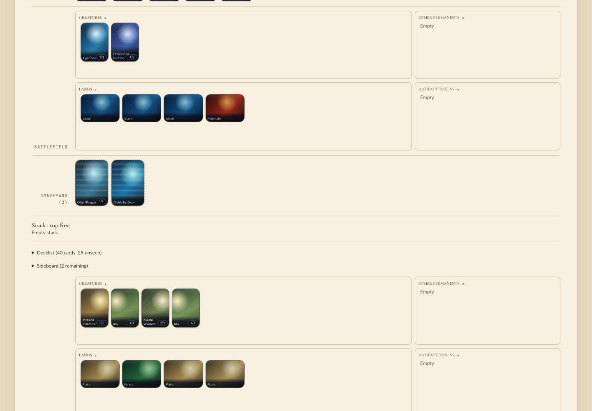
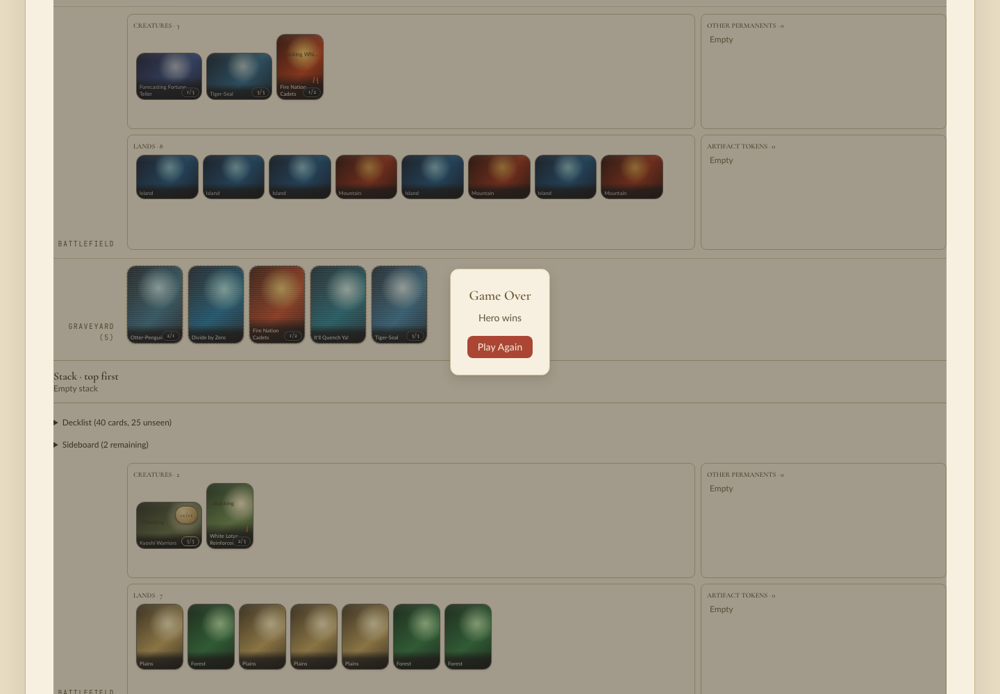

PR #476 at e4187e607. The extension was rebuilt from this head (release, cp313) before testing, because the
installed .so predated the main merge. No code changes came out of QA.
Called managym.card_definitions_json(), unsupported_cards, catalog_tokens and world_identity.
defs: 460 rows, 16 tokens (is_token: true), row JSON keeps the old shape (name, no key) token_name refs in effects: token.ally, token.ballistic_boulder, ..., token.spirit, token.treasure (all 16 are keys) unsupported(["Spirit","Ally","Clue","Lightning Bolt","token.spirit"]) -> ['Ally','Clue','Spirit','token.spirit']
Effects name tokens by key; tokens are refused for deck entry by printed name and by key.
tla-baseline-v1, 20 games: all finished; Ally tokens observed throughout../scripts/play --port 18731 --frontend-port 18732; READY reported native cp313 from this checkout. Headless Chromium
(Playwright from academy/ui): chose GW Allies vs UR Lessons, New Game, then played (preferring land, then cast, then
attack, then pass) until the game ended.
Two Ally tokens reached the battlefield at step 10, labelled "Ally", 1/1, pack treatment
(data-asset-source="pack"). The game ran to "Game Over" with no console errors. A second game also created Ally tokens and finished.


token.plain_spirit, a 1/1 Spirit with scryfall_id: None that shares a printed name with
token.spirit, then ran the cards crate's scryfall/token/observability tests in debug. Scryfall checks passed. The one
failure was token.plain_spirit: 0 creating references, the observability guard asking for a card that creates it.
That is the intended guidance. Reverted.lea.ancestral_recall's Scryfall id: lea.ancestral_recall: malformed Scryfall id "". Reverted.token() helper in tokens.rs takes a required id, so an unprinted
token (Lita's Zeppelin in MTG-286) is written as a TokenDefinition literal with scryfall_id: None, as in
content_pack_tests.rs. That is fine for one token.admit_decklists([("mine", Decklist("20 Forest\n16 Plains\n4 Clue\n"))])
DeckImportError: mine mine.txt:3: Clue: A token, created by its card; not a deck entry
Works: token creation, use and sacrifice in real games; Academy rendering of tokens; deck rejection by name and key; the Scryfall checks (required for cards, optional for tokens); key-based token identity for shared printed names.
Not reached: PyPI/clean-machine install (no packaging change in this PR; CI package and Clean-machine Play passed).
Engine Budget and three Integration jobs were still pending when this was written; 18 checks had passed.
Still wrong: nothing found. The known follow-up stands: Academy curated-pack art keys tokens by printed name, so two tokens sharing a name would share art. No such pair exists yet.